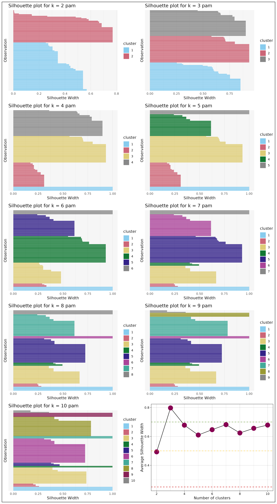
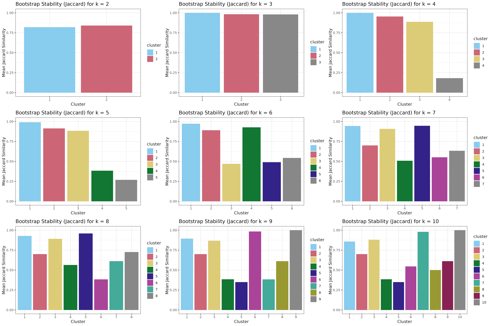
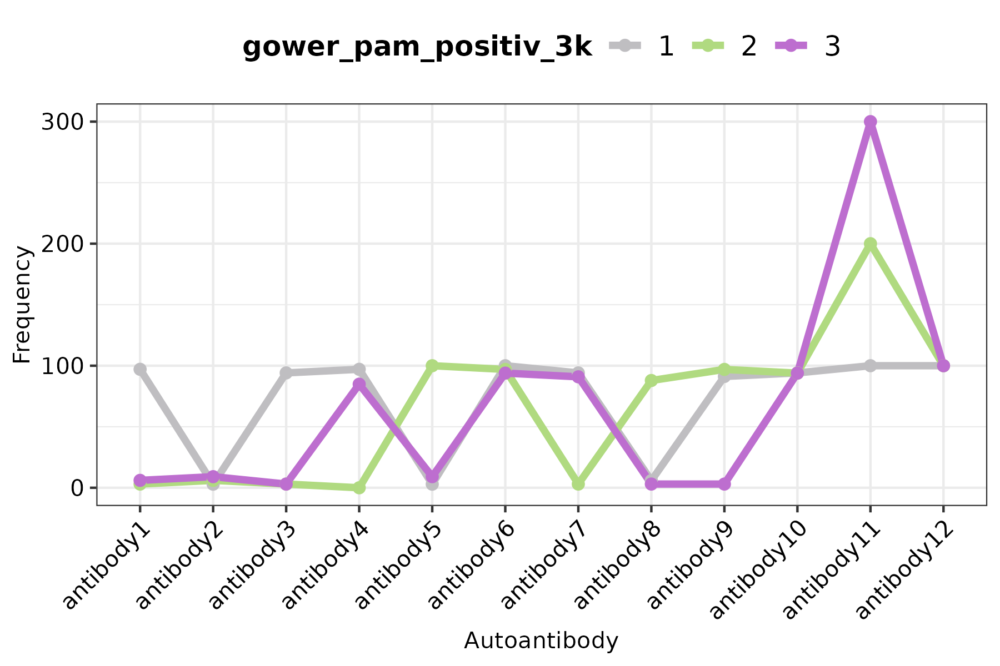
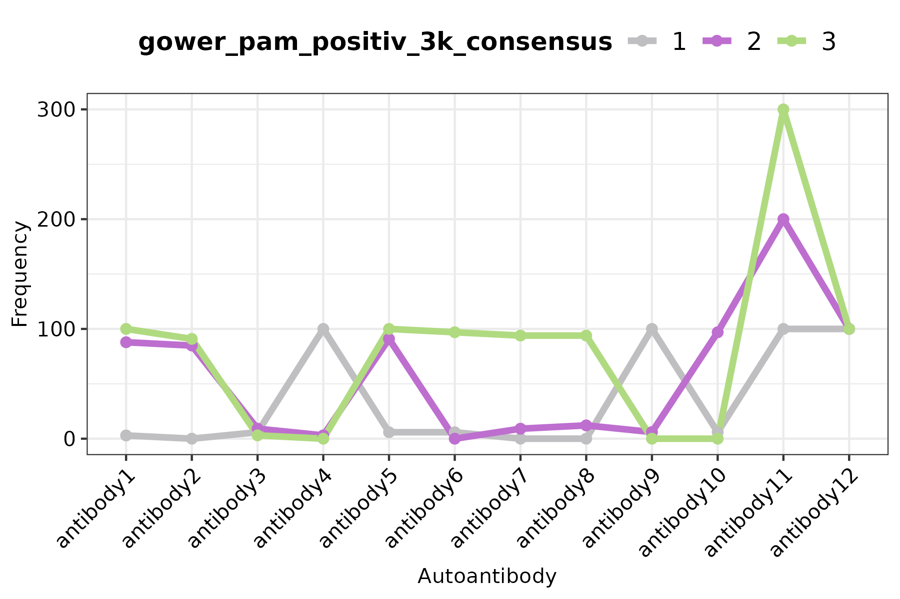
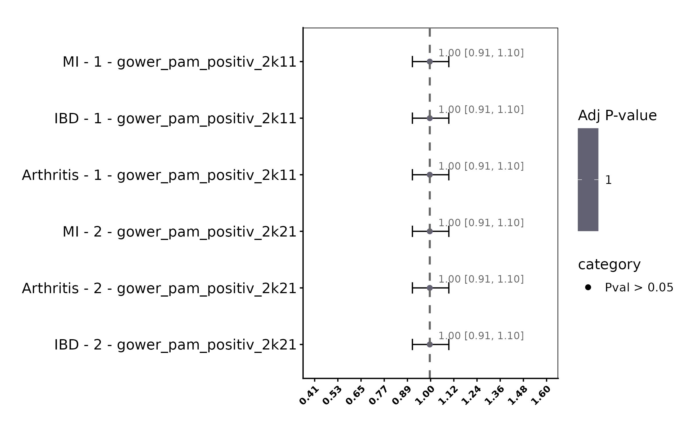

getting started with autoclust
autoclust.RmdLoad required packages.
Read data
Evaluate clustering using autoantibody positivities.Here we will
simulate a synthetic dataset with 500 samples, 20 antibodies and 4
theoretical clusters. If you need to read your data from an excel file
for example you can run:clinical_data_df <- read.xlsx("/path/to/your/data")
and replacing "/path/to/your/data" for the path where your
data is located in your computer.
# DO NOT DO THIS - This is only to show how to cluster, but this will generate synthetic data.
clinical_data_df <- generate_synthetic_clusters(n_samples = 100, n_vars = 10, n_clusters = 3, n_batches = 1, data_type = "binary")
# Assign column names to "Antibody" and 1 to number of antibodies
colnames(clinical_data_df) <- paste0("antibody", seq(1,length(colnames(clinical_data_df))))
# Explore dataset
head(clinical_data_df)## antibody1 antibody2 antibody3 antibody4 antibody5 antibody6 antibody7
## sample1 1 0 1 0 1 1 1
## sample2 1 0 1 0 1 1 1
## sample3 1 0 1 0 1 1 1
## sample4 1 0 1 0 0 1 1
## sample5 1 0 1 0 1 1 1
## sample6 1 0 1 0 1 1 1
## antibody8 antibody9 antibody10 antibody11 antibody12
## sample1 0 1 0 1 1
## sample2 0 1 0 1 1
## sample3 0 1 0 1 1
## sample4 0 1 0 1 1
## sample5 0 1 0 1 1
## sample6 0 1 0 1 1
# Establish a directory where to save your results
output_data_dir <- "." # This will save the results in the current working directory. You can change it for whatever you want.Run clustering
One can see all the possible parameters of the function
running:
/home/runner/work/_temp/Library/autoclust/help/cluster_eval
# Run cluster evaluation
n_boots <- 10 # How many iterations?
n_dim <- 10 # Until how many clusters to calculate
cluster_evaluation_autoantibodies <- cluster_eval(x = clinical_data_df, ndim = n_dim, distance = "gower",
clust_method = "pam", save_plot = TRUE, data_type = "continous",
boot_runs = n_boots, plots_suffix = "clust_positv_pam_gower",
plots_dir = output_data_dir)Explore results
Show cluster stability plots.
Silhouette scores
Silhouette scores per patient and per cluster. i.e. how well separated are the clusters, and how much each of them overlap (or separate) from each other. For each data point (patient in this case), the intra-cluster distance (i.e. how close the point is to other points within the same cluster) and the nearest-cluster distance (i.e. how far the data point is from points in the nearest neighboring cluster) are calculated. The individual silhouette scores are represented on the first 10 plots, while the average is represented on the last plot.
# Show silhouette plots
cowplot::plot_grid(plotlist = lapply(cluster_evaluation_autoantibodies$silhouette_plots, function(x) x), ncol = 2) + theme_bw()
Bootstrap stability
Bootstrap stability represented by mean jaccard index, i.e. how similar are clusters within themselves when several iterations are carried out. The Mean jaccard score by cluster is displayed.
# Show jaccard index plots
cowplot::plot_grid(plotlist = lapply(cluster_evaluation_autoantibodies$bootstrap, function(x) x$plot + theme_bw()))
Autoantibody positivity rate
Make line plot using the cluster assignments from the “regular”
clustering using the specified distance matrix and clustering algorithm,
and the consensus class, which uses the boostrap information to assign
patients to the cluster they are most likely to belong to based on
n_boots number of iterations.
# Add group information to your clinical df
clinical_data_wcluster_df <- clinical_data_df %>%
mutate(gower_pam_positiv_2k = as.factor(cluster_evaluation_autoantibodies$fit$`2`$clustering),
gower_pam_positiv_3k = as.factor(cluster_evaluation_autoantibodies$fit$`3`$clustering),
gower_pam_positiv_2k_consensus = as.factor(cluster_evaluation_autoantibodies$consensus_clustering$result[[2]]$consensusClass),
gower_pam_positiv_3k_consensus = cluster_evaluation_autoantibodies$consensus_clustering$result[[3]]$consensusClass) # For pam_gower clustering
aa_colnames <- colnames(clinical_data_df) # Change this to the name of your antibodies
make_aa_lineplot(x = clinical_data_wcluster_df, aa_colnames = aa_colnames,
subgroup_column = "gower_pam_positiv_2k")
make_aa_lineplot(x = clinical_data_wcluster_df, aa_colnames = aa_colnames,
subgroup_column = "gower_pam_positiv_3k")
make_aa_lineplot(x = clinical_data_wcluster_df, aa_colnames = aa_colnames,
subgroup_column = "gower_pam_positiv_2k_consensus")
make_aa_lineplot(x = clinical_data_wcluster_df, aa_colnames = aa_colnames,
subgroup_column = "gower_pam_positiv_3k_consensus")
Clinical associations
For this part, we will also make 3 more synthetic columns with hypothetical binary variables, but if you have a clinical dataset with this information, you will replace this section with the name of your columns.
# DO NOT DO THIS - make hypothetical clinical manifestations and sex
clinical_manifestations <- generate_synthetic_clusters(n_samples = 100, n_vars = 4, n_clusters = 3, n_batches = 1, data_type = "binary") %>% select(var1, var2, var3, var4)
colnames(clinical_manifestations) <- c("Arthritis", "MI", "IBD", "sex")
clinical_data_wcluster_df <- merge(clinical_data_wcluster_df, clinical_manifestations)
# Define clinical manifestations to test for association
clinical_manifestations <- c("Arthritis", "MI", "IBD") # replace with your manifestations names
associations_positiv_2k_clust <- run_associations(clinical_data_df = clinical_data_wcluster_df,
clinical_data_cols = clinical_manifestations,
predictor_var_colname = "gower_pam_positiv_2k",
adjust_by = "sex", filter_sig_OR = FALSE, # Set to true if you want to keep only significant results in the forest plot
plot = TRUE, ntop = 10)Forest plots
Show forest plots for top associations. By calling
names(associations_positiv_2k_clust) you can see what the
output of the analysis contains:
- models
- anova
- summarized_results
- df
- forest_plot
names(associations_positiv_2k_clust) # Here you can see the information this variable contains.## [1] "models" "anova" "summarized_results"
## [4] "df" "forest_plot"
#associations_positiv_2k_clust$anova # ANOVA results
associations_positiv_2k_clust$forest_plot # forest plots
** How to interpret these?**
The results of the plots show “clinical manifestation - cluster -
clustering_variable”, where clinical manifestation corresponds to the
outcome variable, cluster corresponds to cluster membership in a
one-v.s.-all other manner. Here the clinical manifestation corresponds
to the dependent variable (variable to be modelled), and the cluster
membership corresponds to the independent (predictor) variable. For each
clinical manifestation in this case we have a model in this form:clinical manifestation ~ gower_pam_positiv_2k + sex